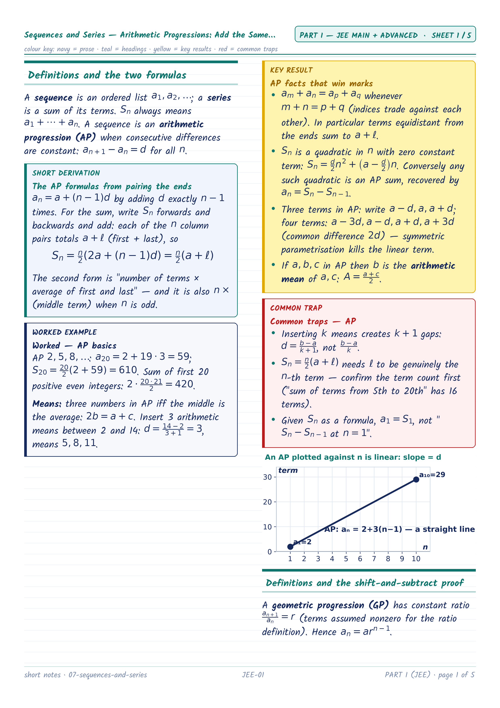
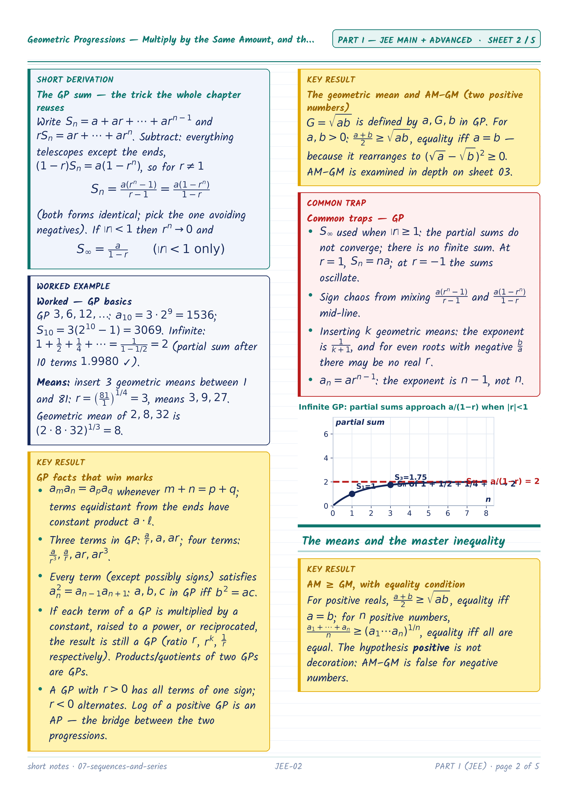
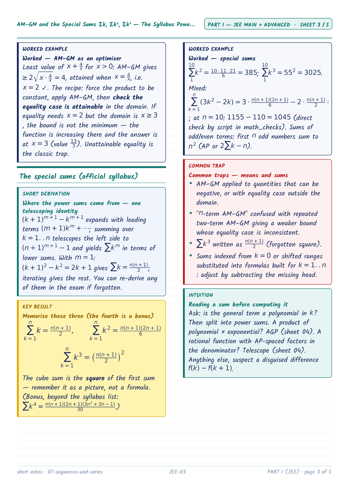
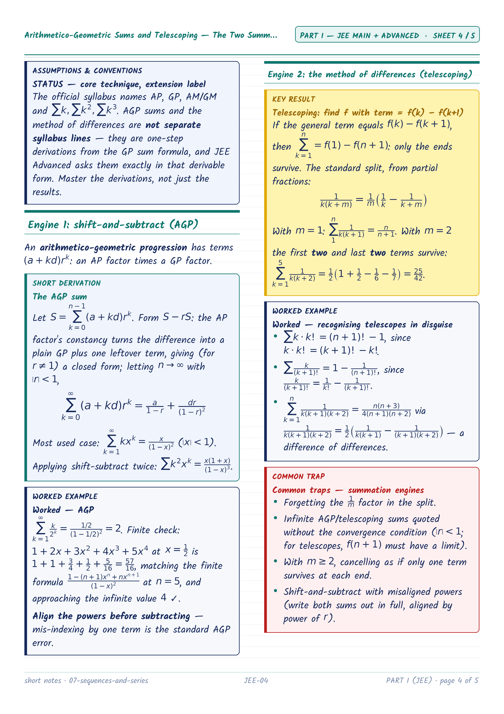
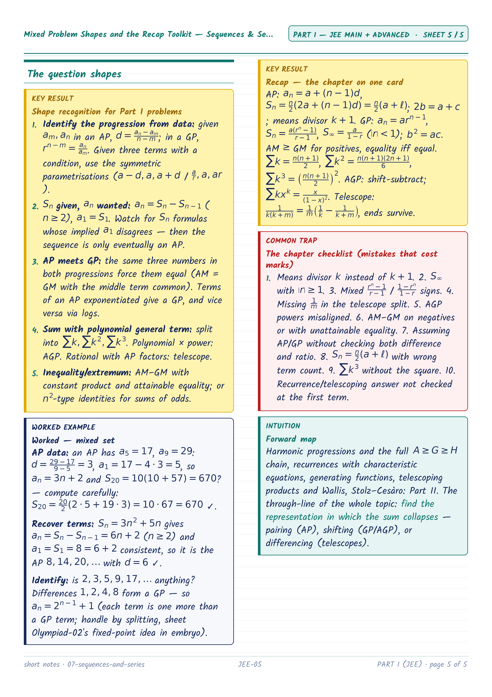
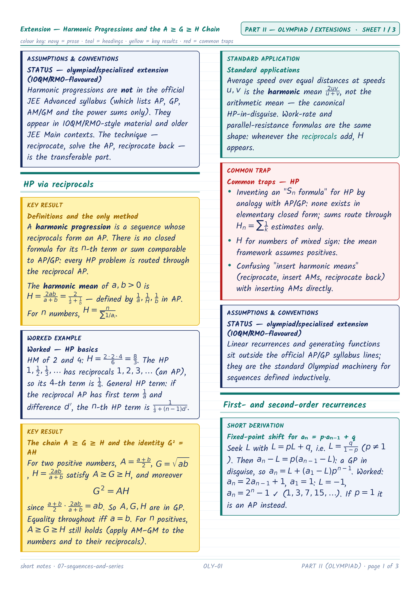
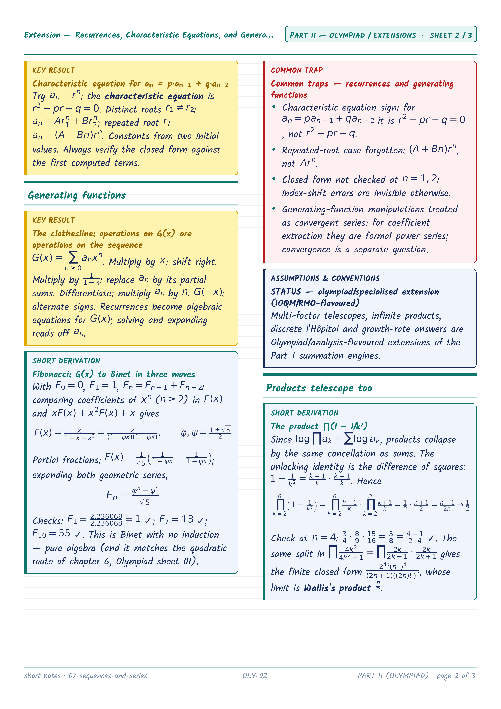
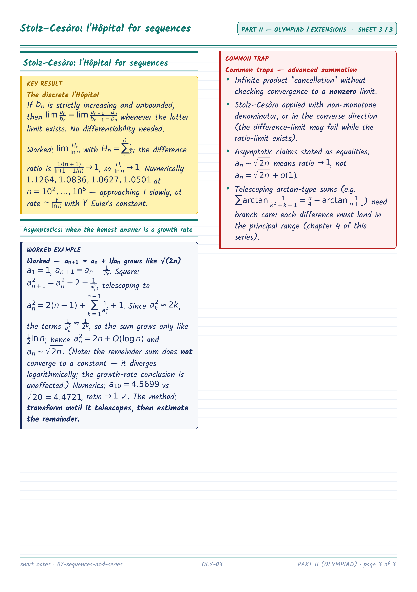

Downloads
Combined PNG ZIP (JEE first)
JEE PNG ZIP
Olympiad PNG ZIP
Combined PDF (bookmarked)
JEE PDF (bookmarked)
Olympiad PDF (bookmarked)
Printing: A4 portrait, one sheet per page, Fit (not Fill/Crop). Every PNG is already exact A4 proportion at 300 DPI (2480×3508).
Part I — JEE Main + Advanced (5 sheets)


JEE-01 — Sequences and Series — Arithmetic Progressions: Add the Same Amount Every Time
Sequences and Series — Arithmetic Progressions: Add the Same Amount Every Time
Sequences and Series — Arithmetic Progressions: Add the Same Amount Every Time


JEE-02 — Geometric Progressions — Multiply by the Same Amount, and the Infinite Sum (cont.)
Geometric Progressions — Multiply by the Same Amount, and the Infinite Sum
Geometric Progressions — Multiply by the Same Amount, and the Infinite Sum


JEE-03 — AM–GM and the Special Sums Σk, Σk², Σk³ — The Syllabus Power Sums (cont.)
AM–GM and the Special Sums Σk, Σk², Σk³ — The Syllabus Power Sums
AM–GM and the Special Sums Σk, Σk², Σk³ — The Syllabus Power Sums


JEE-04 — Arithmetico-Geometric Sums and Telescoping — The Two Summation Engines (Derivable Applications)
Arithmetico-Geometric Sums and Telescoping — The Two Summation Engines (Derivable Applications)
Arithmetico-Geometric Sums and Telescoping — The Two Summation Engines (Derivable Applications)


JEE-05 — Mixed Problem Shapes and the Recap Toolkit — Sequences & Series
Mixed Problem Shapes and the Recap Toolkit — Sequences & Series
Mixed Problem Shapes and the Recap Toolkit — Sequences & Series
Part II — Olympiad / Extensions (3 sheets)


OLY-01 — Extension — Harmonic Progressions and the A ≥ G ≥ H Chain
Extension — Harmonic Progressions and the A ≥ G ≥ H Chain
Extension — Harmonic Progressions and the A ≥ G ≥ H Chain


OLY-02 — Extension — Recurrences, Characteristic Equations, and Generating Functions (cont.)
Extension — Recurrences, Characteristic Equations, and Generating Functions
Extension — Recurrences, Characteristic Equations, and Generating Functions


OLY-03 — Stolz–Cesàro: l'Hôpital for sequences
Extension — Telescoping Products, Wallis, Stolz–Cesàro, and Asymptotics
Extension — Telescoping Products, Wallis, Stolz–Cesàro, and Asymptotics